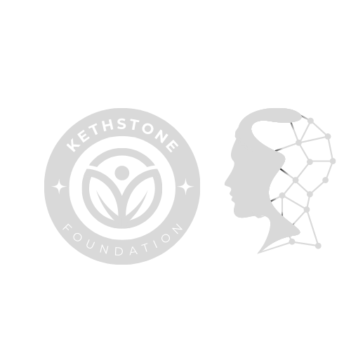

You're supporting Bright future for children,
A Project Of Wounded Little Hearts.
Your donation will empower children in need of quality education. We aim to provide proper education to 20,000 children yearly in different communities across the globe.
$28,000 raised of $900,000 goal
started in 01.02.23
You're supporting Children's Lifeline Foundation,
A Project Of Wounded Little Hearts.
Your donation will make a significant impact in the lives of orphaned children. We aim to provide nurturing care, emotional support, and basic needs to these children so they can thrive.
$16,000 raised of $25,000 goal
started in 01.02.23
You're supporting children's Hope Initiative,
A Project Of Wounded Little Hearts.
Your donation will directly benefit children affected by natural disasters and conflict. We aim to provide them shelter and the essentials they need to recover and rebuild their lives.
$4,900 raised of $50,000 goal
started in 01.02.23
You're supporting Child Empowerment Foundation,
A Project Of Wounded Little Hearts.
Your donation will help alleviate poverty across Africa, providing vulnerable children with access to healthcare, education, nutritious meals, and economic opportunities.
$2,900 raised of $50,000 goal
started in 01.02.23
Our medical volunteer
Josie Kimberly
General practitioner, MD
Mike Wills
General Practitioner, MD
Jake Raymond
Nurse, Public Health
Great collaboration
I am thrilled to share my heartfelt testimonial about the exceptional experience I had as a medical volunteer, highlighting the remarkable spirit of collaboration that made it truly extraordinary. Throughout my time volunteering, I was fortunate to witness and actively participate in a great collaboration among healthcare professionals, volunteers, and local communities, which ultimately had a significant positive impact on the lives of those in need.
I am forever grateful for the opportunity to be part of such a collaborative endeavor, and I strongly encourage others to embark on this journey to make a positive impact in the lives of others.
It was a great experience!
My volunteer experience was undeniably a great one. It allowed me to witness the power of compassion and service, connect with extraordinary individuals, and make a tangible impact in the lives of others. The lessons learned, the friendships formed, and the memories created will forever hold a special place in my heart.
I would wholeheartedly recommend volunteering to anyone seeking to embark on a journey of personal growth, empathy, and making a positive difference in the world. It truly was an incredible and great experience that will shape me for years to come.
Quite tough but exciting!
I would say my volunteer experience was a perfect blend of toughness and excitement. The challenges I faced tested my limits and allowed me to grow in ways I never thought possible. Yet, the excitement of making a tangible difference, connecting with incredible individuals, and embracing the unknown made it all worthwhile. It was a transformative experience that taught me the value of perseverance, resilience, and the joy that comes from stepping into the unknown.
The thrill of stepping outside my comfort zone, embracing new experiences, and seeing the direct results of our efforts made every moment truly exhilarating.
Trusted by

Donation Index
This chart is an overview of donation goal completed in 2022